오늘의 arXiv Top 15
2026-10-29 (목) ·
cs.CV / cs.LG / cs.RO / cs.CL / cs.AI New submissions 전수 평가
cross-list · replacement 제외, 중복 병합 · Top 15은 원문까지 읽고 정리
소급 작성: 자동 실행이 멈췄던 날이라 2026-11-12에 소급 작성함. 이 날 arXiv 공지 목록은 이미 내려가서, 논문 목록을 arXiv API의 첫 제출 시각(마감 14:00 ET 기준)으로 다시 만들었음. 실제 공지 목록과 일부 다를 수 있음(최근 공지 3일로 대조하면 실제 목록의 84~97%가 들어감).
270
신규 논문
65
cs.CV
69
cs.LG
35
cs.RO
41
cs.CL
60
cs.AI
15
정밀 리뷰
1차 스크리닝 269편 (Claude (scheduled agent)) → Top 15 PDF 정밀 리뷰 (Claude (scheduled agent))
분야별 필터
전체 15개 논문 표시 중
1
76점
ELEVATE: Agentic Controller Acquisition from Task Failure for Quadrupedal Manipulation
Manipulation
relevance 9/10
IEEE 학술지 계열 양식 (추정)
Robotics (cs.RO)
다리 달린 로봇팔(사족 보행 manipulator)이 과제에서 같은 방식으로 계속 실패하면, coding agent가 빠진 동작을 진단하고 RL로 새 controller를 학습해 라이브러리에 추가함. 처음 controller로는 성공률 0%였던 5개 과제에서 과제별 평균 성공률 98.4~100%를 얻음.
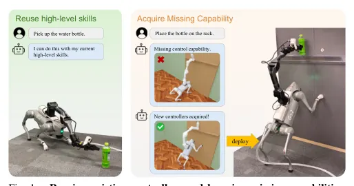
무슨 문제인가
LLM으로 task program을 짜고 고치는 방법에는 Code-as-Policies와, 실행 결과를 보고 program을 고치며 재사용할 Python skill을 남기는 ASPIRE가 있음. 이 방법들은 이미 있는 controller를 조합할 뿐이라, controller가 못 하는 몸동작이 필요한 과제는 풀 수 없음. 사족 보행 manipulator는 벽 짚고 일어서기, 두 발 서기처럼 서로 다른 whole-body 동작이 필요한데, 어떤 controller를 미리 학습해 둘지는 과제를 보기 전에 정하기 어려움. Eureka처럼 reward 설계를 자동화한 연구는 사람이 학습할 동작을 정해 줘야 함. 과제 실패에서 어떤 새 동작이 필요한지를 agent가 스스로 정하는 문제는 다뤄지지 않았음.
어떻게 푸나
ELEVATE는 반복 실패에서 빠진 whole-body 능력을 찾아 새 controller를 학습하고 라이브러리에 더하는 framework임. 입력은 언어 과제 지시와 시뮬레이션 환경이고, 처음 라이브러리에는 사전학습된 loco-manipulation controller 하나와 바닥 물체 집기 skill 하나만 있음. 먼저 task subagent가 ASPIRE 방식으로 Python task program을 쓰고, 목표 위치·로봇 초기 자세·물체 배치를 바꾼 개발용 변형 15개의 수치 결과·실행 기록·영상을 보고 고침. 서로 다른 전략이 같은 물리적 한계에 계속 막히면(예: 접근은 되는데 높은 목표에 수직으로 못 미침) 작업을 나눠 맡기는 상위 agent인 coordinator에게 빠진 능력을 보고함. coordinator가 승인하면 controller subagent가 배울 동작을 정하고, 학습 장면·시작 상태·reward·curriculum·종료 조건·성공 기준을 직접 설계해 PPO로 학습함. 이때 자세 바꾸기(body reconfiguration)와 지지 자세에서 팔 움직이기(supported manipulation) 두 가지 학습 template, 로봇 모델, simulator, PPO 설정은 framework가 줌. 학습 결과와 rollout을 보고 reward를 고쳐 다시 학습하고, 검증된 controller는 라이브러리에 추가되며 task subagent가 이를 조합한 skill로 과제를 다시 풂.
결과
- 과제 7개를 차례로 푸는 시뮬레이션 실험(독립 실행 5회, 과제당 평가 변형 50개)에서 처음 controller의 작업 공간 밖에 있는 5개 과제 각각의 평균 성공률(실행 5회 평균)이 98.4~100%임. controller 라이브러리가 고정된 ASPIRE와 Code-as-Policies는 이 5개 과제에서 모두 0%임.
- 벽에서 0.30 m 떨어진 1.25 m 높이 목표에 닿는 A02에서, 5회 실행 모두 학습 전 0/50에서 학습 후 50/50으로 오름. agent는 앞발로 벽을 짚고 몸을 올리는 controller와 그 자세에서 팔을 움직이는 controller를 따로 학습함.
- 처음 controller로 풀 수 있는 A01(바닥 높이 목표에 닿기)·B01(바닥의 병이나 캔을 0.30 m 이상 들기)에서는 ASPIRE와 차이가 없음(ELEVATE 대 ASPIRE: A01 99.2% 대 99.6%, B01 97.6% 대 99.2%). 저자도 task program 작성 능력이 나아진 것은 아니라고 밝힘.
- 실제 Unitree Go2 + PiPER 팔에서 시뮬레이션 controller를 추가 학습 없이 써서 선반에서 병 꺼내기 18/20, 바닥 병을 선반에 놓기 16/20 성공함.
한계
과제 묶음 자체가 처음 controller로는 풀 수 없는 과제를 일부러 넣어 만든 것이라, baseline 0%는 설계상 예상되는 결과이고 계산량도 맞추지 않았음. agent는 framework가 준 학습 template 두 가지 안에서만 controller를 설계하며, 실행당 controller 학습에 RTX 5090 한 장으로 4.2~6.3시간, 전체 과정에 20.0~22.2시간이 듦. 실로봇 검증은 과제 2개, 각 20회뿐이고 학습된 동작도 벽·상자 지지 계열에 한정됨.
누리랩 연구와의 연결
- 반복 실패를 '빠진 물리적 능력'으로 진단해 새 controller 학습으로 연결하는 구조라, failure detection·diagnosis·recovery 연구에서 실패를 program 수정이 아닌 skill 획득으로 넘기는 기준의 예시로 쓸 수 있음.
- LLM agent가 reward·curriculum을 고쳐 가며 controller를 늘리고 skill로 재사용하는 흐름은 long-horizon skill chaining과 robot memory(라이브러리 누적) 연구의 비교 대상이 됨.
2
74점
SpaceAct: Benchmarking 3D Spatial and Temporal Reasoning via Closed-Loop Action and Active Perception
Embodied AI
relevance 8/10
Robotics (cs.RO)
MLLM이 수치 좌표 없이 장면 속 자(ruler)와 RGB만 보고 카메라를 직접 움직이며, 연속 충돌·정역학 검사 아래 6-DoF 동작을 내게 하는 benchmark SpaceAct를 만듦. 상위 3개 모델에 정답 고수준 계획을 줘도 episode당 충돌은 5.2회 그대로였고, 정확한 3D 상태를 더하자 0.5회로 줄어 병목이 3D grounding 쪽에 있음을 보임.
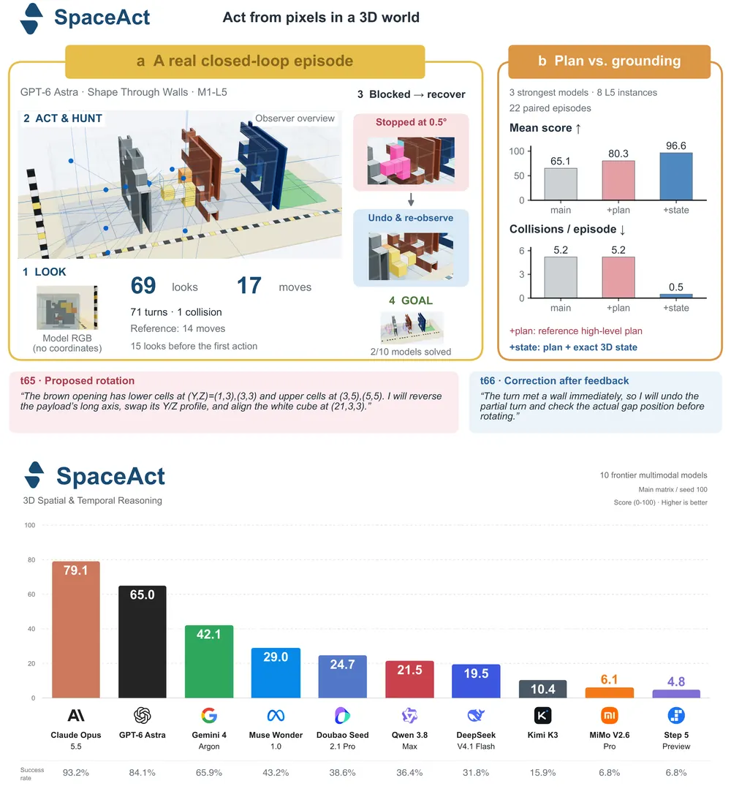
무슨 문제인가
기존 3D spatial reasoning benchmark는 대부분 정적 이미지나 녹화 영상에 대한 객관식 VQA임. 이 설정에서 모델은 카메라를 움직여 가림을 풀 필요가 없고, 잘못된 행동 때문에 충돌이나 구조물 collapse를 겪지도 않음. 상호작용형 embodied benchmark는 외부 detector가 계산한 3D 좌표를 주고 motion planner가 충돌 없는 궤적을 대신 만들거나, 행동을 이산·semantic 명령으로 줄임. 또 장면 속 물체가 스스로 움직이지 않아 속도나 타이밍이 성공 여부에 영향을 주지 않음. 그래서 MLLM을 embodied system의 task planner로 쓸 때 필요한 능력, 곧 이미지에서 metric 좌표를 읽고 연속 충돌·정역학 제약을 지키며 시간에 맞춰 행동하는 능력을 따로 재지 못했음.
어떻게 푸나
SpaceAct는 끼워 맞추는 브릭과 3D 기계 퍼즐로 만든 36개 task family, 108개 instance로 이루어지고 6개 category(구조물 건설, 이산 퍼즐, 연속 6-DoF 조작, 조립·패킹, multi-view 복원, 시간·메커니즘 추론)로 나뉨. parameterized family는 난이도 tier L1, L3, L5로 나뉘고, 8개 family에는 L5에 인식 조건을 더한 L7이 있음. 모든 instance는 결정적 reference solver로 풀 수 있는지 확인했고, 알려진 지름길이 있는 instance는 걸러 냄. 모델은 SAPA(Spatiotemporal Active-Probing Agent: 어떤 MLLM에도 붙이는 tool-call 기반 agent 틀) 안에서 최대 100 turn 동안 움직임. 매 turn 입력은 자와 투영 벽이 있는 RGB 이미지, 과제 규칙, 쓸 수 있는 tool, 최근 텍스트 10 turn과 이미지 2장, 모델이 스스로 고쳐 쓰는 note임. 출력은 근거 문장, 새 note, 그리고 카메라 이동·probe(환경을 건드려 숨은 물리 parameter를 알아내는 행동)·평행이동·회전·브릭 배치·시간 지정 행동 중 1~5개의 tool call로 된 JSON임. 환경은 motion planner 없이 행동을 0.05 stud(브릭 격자 단위) 또는 0.5° 이하의 작은 단계로 쓸어 가며 충돌과 강체 평형을 검사함. 첫 위반에서 실행을 멈추고, 왼쪽에 위반 순간과 오른쪽에 되돌린 유효 상태를 담은 1280×640 분할 화면을 돌려줌. 동적 과제는 모델이 생각하는 동안 시뮬레이션 시계를 멈추고, 같은 시점에서 0.25초 간격으로 찍은 5장의 frame을 줌. 원인 진단을 위해 +plan(정답 고수준 계획을 주되 거리는 모델이 정함), +state(계획에 더해 매 turn 정확한 payload 3D pose를 줌), 카메라 고정, 이미지 제거 조건을 같은 instance에서 따로 돌림. 점수는 0~100이며, 푼 episode는 40~100점에서 여분 행동·충돌·turn 수만큼 점수를 낮추고, 못 푼 episode는 진행도에 따라 0~35점을 줌.
결과
- 가장 어려운 tier 44개 instance로 된 주 평가(모델·instance당 1회, 100 turn 예산)에서 10개 frontier MLLM의 점수가 4.8(Step 5 Preview)부터 79.1(Claude Opus 5.5)까지 퍼짐. 성공률은 6.8%~93.2%임. 10개 중 7개 모델은 연속 6-DoF 조작 과제를 27.3% 이하로 풀었고, 7개 모델은 multi-view 복원 과제를 하나도 풀지 못함.
- 상위 3개 모델의 L5 instance 8개, 22쌍 비교에서 평균 점수가 도움을 주지 않은 주 평가(main) 65.1, +plan 80.3, +state 96.6임. episode당 충돌은 +plan에서 5.2회로 main과 같고 +state에서 0.5회로 줄어듦. +state에서 episode 길이도 36.7 turn에서 5.3 turn으로 줄어듦.
- 5~8위 모델 4개에서는 +plan이 평균 점수를 10.9에서 35.3으로 올렸지만 episode당 충돌은 21.5회에서 28.0회로 늘어남. 이 상승의 약 90%는 이산 탐색 과제 2개(3D gravity maze, bevel gear train)에서 나왔고, +state는 점수를 81.8로 올림.
- 주 평가에서 풀지 못한 227 episode 중 46%가 충돌 반복(24%)이나 관찰 반복(22%)에 머무름. 6-DoF 조작에서는 이 비율이 60%임. 충돌한 turn 바로 다음 turn에 또 충돌하는 비율이 모델별로 44%~71%여서, 분할 화면 피드백이 좌표 보정으로 잘 이어지지 않음.
한계
모든 실험은 브릭·퍼즐 시뮬레이터 안에서 했고 실로봇 검증은 없음. 주 평가는 모델·instance당 seed 1개이고, Claude Opus 5.5는 API 오류로 주 평가 3개 run이 0점 처리되고 진단 비교의 일부 쌍이 빠짐. +plan과 +state 비교는 L5 instance 8개에서만 했고, 공개 라이브러리를 언급하지만 본문에 주소는 없음.
누리랩 연구와의 연결
- active perception과 embodied spatial reasoning을 MLLM 수준에서 재는 도구로 쓸 수 있음. 계획과 3D 상태를 차례로 주입해 실패 원인을 planning과 3D grounding으로 나누는 방식은 VLA의 failure diagnosis 실험 설계에 그대로 가져올 수 있음.
- 위반 순간과 되돌린 상태를 담은 분할 화면을 받고도 다음 turn에 다시 충돌하는 비율이 44%~71%라는 결과는, 접촉 피드백을 metric 보정으로 바꾸는 failure recovery가 아직 풀리지 않았음을 보여 줌.
3
72점
METATRON: A Promptable Whole-Body Execution Layer for Humanoids
Embodied AI
relevance 8/10
IEEE 학술지 계열 양식 (추정)
Robotics (cs.RO)
휴머노이드 whole-body policy 하나를 고정해 두고, 과제별 코드(skill)가 부분 목표만 넣어 걷기·일어나기·앉기·원격 조작을 모두 수행하게 함. MuJoCo 시뮬레이션의 Unitree G1 휴머노이드 손목 reaching에서 목표 도달률 83%로, ARDY+SONIC reference-tracking pipeline의 39%보다 높음.
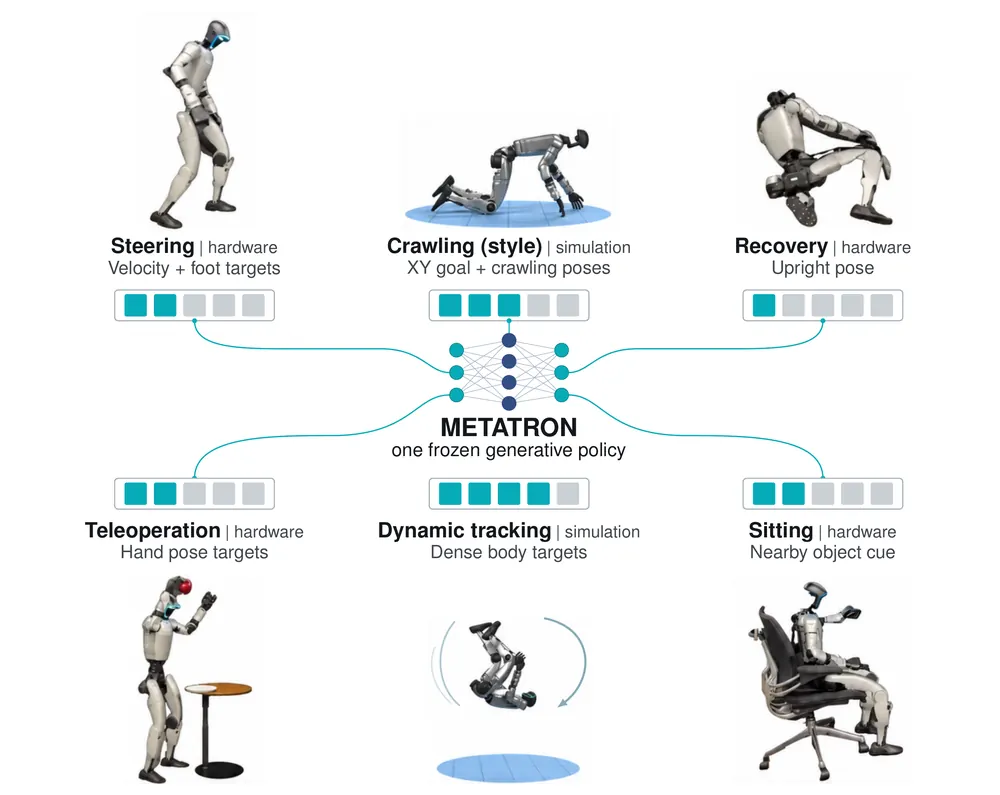
무슨 문제인가
휴머노이드는 보행, 조작, 넘어진 뒤 회복, 순응 제어, motion tracking마다 따로 학습한 controller를 쓰는 경우가 많음. 이 controller들은 균형과 전신 협응을 각자 다시 배우고, controller 사이 전환에도 별도 공학이 필요함. 기존 대안인 reference-tracking pipeline은 motion generator가 전신 궤적을 만들고 dense tracker가 따라가는 구조라서, 과제마다 완전한 reference 궤적을 만들어야 함. 저자들은 무엇을 할지와 몸을 어떻게 협응할지를 나누면 새 과제마다 policy를 다시 학습하지 않아도 된다고 주장함.
어떻게 푸나
METATRON은 MaskedMimic(dense tracker를 부분 목표용 policy로 distillation하는 기존 방법)을 확장한 2단계 학습을 씀. 먼저 PPO로 dense motion tracker를 학습하고, G1에서는 데이터 묶음별로 tracker 4개(BONES, AMASS+LAFAN, 합성 회복 동작, SAMP 앉기 동작)를 둠. 다음으로 on-policy distillation으로 tracker 행동을 따라 하는 학생 policy 하나를 학습하며, 학생에게는 무작위로 가린 prompt만 줌. prompt는 도착 시각이 붙은 world 좌표 신체 목표, 위치와 무관한 자세 목표, 평면 속도, 예시 자세 묶음으로 준 style cue, 물체 bounding box 꼭짓점 8개로 이루어지고 각 항목은 생략 가능함. 같은 부분 목표를 채우는 동작이 여럿이므로 conditional VAE를 쓰고, prior가 고른 latent를 단위 구면에 투영해 decoder가 joint 목표를 출력함. 학습이 끝나면 policy를 고정하고, skill이라 부르는 일반 코드가 매 control step마다 prompt를 만들어 넣음. skill의 규칙은 사람이 초안을 쓰고 coding agent가 motion capture 클립에 맞춰 식을 fitting하고 시뮬레이션 시나리오에서 실패 사례를 찾아 고침.
결과
- G1 손목 reaching(MuJoCo, 거리 0.35~1.8 m와 높이 0.55~1.35 m에 걸친 목표 54개, 양손): 손목을 10 cm 안에 유지하고 넘어지지 않으면 도달로 셈. 도달률은 METATRON 83%, ARDY+SONIC 39%, GRU+IK+SONIC 28%, GRU+SONIC 0%임. ARDY는 전신 자세를 만드는 autoregressive diffusion model이고 GRU는 저자가 학습한 보행 생성기이며, 둘 다 dense tracker SONIC이 그 궤적을 따라감. GRU+IK는 GRU 출력에 해석적 팔 IK를 덧씌운 것임. METATRON의 손목 오차 5.9 cm는 도달한 목표에서만 잰 값이고, 이 비교의 METATRON은 합성 회복 데이터 없이 학습함.
- 1 m/s 전진 보행 중 몸통을 100 ms 동안 8개 방향으로 밂: 800 N과 1000 N에서 METATRON은 75% 성공, 두 reference-tracking pipeline은 0%임. 600 N에서 75%보다 낮은 62%라 힘에 따라 단조롭지 않고, 저자도 이 비교가 pipeline 전체 비교라 원인을 분리하지 못한다고 적음.
- waypoint reaching 중 반복 밀기 ablation(힘마다 500 episode): 200 N에서 성공률은 전체 모델 94.8%, MaskedMimic+ 90.0%, 전역 목표만 쓴 변형 87.8%, HOVER+ 71.0%임. MaskedMimic+와 HOVER+는 원 방법을 저자의 expert·학습 pipeline·데이터·계산 예산에 맞춰 다시 구현한 변형임. 400 N과 600 N에서는 전역 목표만 쓴 변형이 더 높고 신뢰구간이 겹침. 600 N과 800 N에서는 모든 방법이 10% 미만임.
- 실제 Unitree G1에서 고정된 checkpoint 하나로 Xbox 조종 보행, 여러 넘어진 자세에서 일어나기, PICO headset 원격 조작으로 사과 집기, 소파에 앉았다 일어나기를 시연함. 하드웨어 결과는 시연이며 성공률 수치는 없음.
한계
실로봇 결과는 정성 시연뿐이고, 회복 신뢰도와 보행 안정성을 정량화한 반복 시험은 없음. 소파 앉기에서는 로봇을 소파 근처에 두고 seat bounding box를 직접 넣어 주며, 스스로 다가가 앉는 것은 보이지 않음. 정지 상태에서 2 m/s를 갑자기 명령하면 앞구르기가 나오는 등 동작 범위가 학습 데이터에 기대고, ablation에서 넓은 prompt 구성의 이점은 큰 힘에서 유지되지 않음.
누리랩 연구와의 연결
- 하위 whole-body policy를 고정하고 상위에서 부분 목표만 바꾸는 구조는 VLA나 LLM이 만든 코드가 휴머노이드 전신 동작을 지시하는 계층형 manipulation 연구의 실행 계층 후보로 쓸 수 있음.
- 넘어짐 감지 후 회복 prompt로 바꾸는 skill 전환은 failure detection과 recovery를 policy 재학습 없이 코드 수준에서 다루는 사례임.
4
72점
MATCH: Execution-Aware Hierarchical Reinforcement Learning for Vision-and-Language Navigation in Continuous Environment
Navigation
relevance 8/10
ICRA·IROS·RA-L 계열 양식 (추정)
Robotics (cs.RO)
VLN-CE에서 언어 조건 planner와 primitive action executor를 같은 on-policy rollout으로 함께 RL 학습하는 계층형 방법 MATCH를 만듦. RxR-CE val-unseen 성공률을 같은 0.5B 크기의 이전 방법 Revisiting의 62.3%에서 67.7%로 올림.
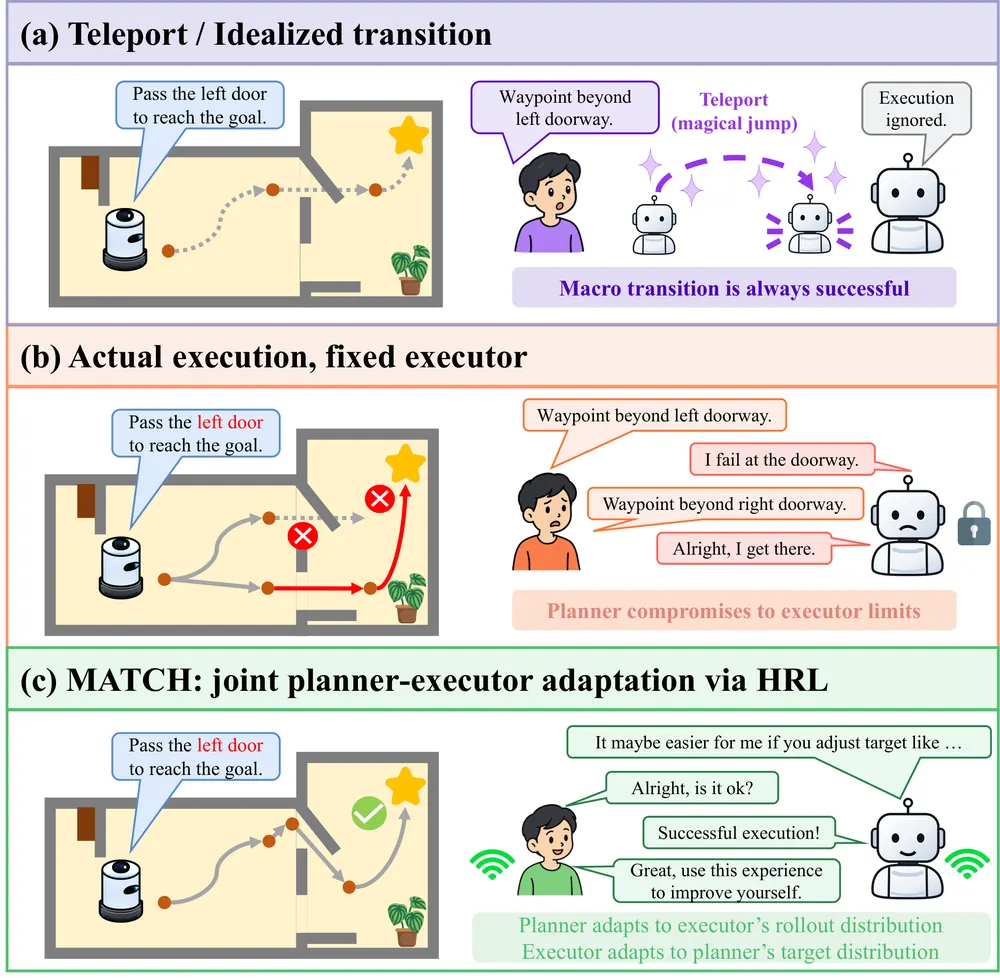
무슨 문제인가
VLN-CE(연속 환경 vision-and-language navigation)에서 agent는 언어 지시를 따라 충돌 제약 아래 수백 개의 primitive action을 수행해야 함. 많은 계층형 방법은 planner가 중간 목표점(waypoint)을 고르고 하위 실행기가 그곳까지 움직이는 구조를 씀. 그런데 기존 방법은 실행을 teleport로 건너뛰거나, 손으로 설계한 controller를 쓰거나, 실제 실행 결과로 planner만 학습하고 executor는 고정함. executor가 고정되면 planner는 통과하기 어려운 문을 피해 지시와 다른 경로를 고르게 됨. 또 executor는 그 실행 경험에서 문을 더 잘 지나가는 법을 배우지 못함.
어떻게 푸나
MATCH(Macro-Action Transition Coupling for Hierarchical RL)는 언어 조건 planner와 언어를 받지 않는 goal-conditioned executor를 hierarchical RL로 함께 학습함. planner는 지시문과 topological graph를 입력으로 받아, 방문한 노드에서 frontier로 가는 edge 하나와 반경 1m 안의 연속 offset을 골라 2D 목표점을 출력함. graph는 같은 frontier라도 출발 노드가 다르면 다른 edge로 두며, 각 edge에는 목표점 주변 16개 위치에 대한 executor의 value 추정값(value field)이 붙음. 실행 뒤에는 REACHED 선언 여부, 사용한 decision 비율, 충돌 비율, 목표까지 남은 변위를 graph에 기록하며, 이 네 값을 outcome memory라 부름. executor는 전방 depth 영상과 목표의 거리·방위를 받아 16회 decision 안에 방향 이동 또는 REACHED를 출력함. planner의 reward는 참조 경로를 순서대로 덮은 길이(ordered route coverage, dynamic programming으로 계산)에서 목표에 못 미친 측지 거리(residual)를 빼서 정하며, 두 항은 모두 미터 단위임. 학습은 두 policy를 따로 사전학습, 고정 executor 아래 planner DAgger, 같은 episode batch로 두 policy를 동시에 PPO 업데이트하는 3단계로 진행함.
결과
- RxR-CE val-unseen(다국어 지시, 길고 최단이 아닌 경로, 장애물 미끄러짐 금지)에서 성공률(SR)이 67.7%로, 같은 graph 구조에 heuristic controller를 쓰는 Revisiting의 62.3%보다 5.4퍼센트포인트 높음. R2R-CE(영어 지시, 최단 경로)에서는 69.0% 대 68.1%로 차이가 0.9퍼센트포인트임.
- 7B VLM 기반 이중 시스템 DualVLN과 비교하면 SR이 R2R-CE에서 4.7퍼센트포인트, RxR-CE에서 6.3퍼센트포인트 높음. 다만 RxR-CE nDTW(경로 충실도)는 두 방법 모두 70.0으로 같음.
- RxR-CE ablation에서 3단계 joint HRL을 빼면 SR이 61.8%로 내려감. executor를 1단계 이후 고정하면 65.6%, heuristic executor로 바꾸면 64.3%로 내려감.
- reward에서 coverage 항을 빼고 residual만 남기면 SR이 62.2%로 가장 크게 내려감. offset 없이 edge가 가리키는 frontier 지점(anchor)만 목표로 쓰게 하면 64.8%임.
한계
실로봇 실험은 TurtleBot 4 기반 로봇으로 실내 episode 4개를 보인 것뿐이고 성공률 같은 정량 지표는 없음. 실로봇에는 depth 추정 모델과 SLAM 지도 기반 AMCL(Adaptive Monte Carlo Localization) 위치 추정이 따로 필요했고, 4-view 입력용 adapter 학습과 시뮬레이션 재학습을 거침. ablation은 RxR-CE에서만 했고 반복 seed나 분산은 본문에서 확인 불가함. 비교 대상 OmniNav(3B 규모 imitation learning 방법)는 원 논문의 teleport 실행 수치가 아니라 저자가 rotate-then-forward executor로 다시 평가한 값임.
누리랩 연구와의 연결
- navigation/VLN에서 상위 planner가 하위 executor의 value 추정과 실행 실패 기록을 보고 목표를 고치는 구조임. failure detection·recovery와 skill chaining 연구에서 하위 skill의 실행 가능성을 상위 계획에 넣는 방식의 비교 대상이 됨.
- planner와 executor를 같은 rollout으로 동시에 PPO 학습하는 절차와 coverage 항과 residual 항의 reward 균형은 VLA의 고수준 계획과 저수준 action policy를 함께 RL로 맞추는 문제에 옮겨 볼 수 있음.
5
71점
Self-Labeled Preference Transfer for Steerable Robot Manipulation
VLA
relevance 9/10
ICRA·IROS·RA-L 계열 양식 (추정)
Robotics (cs.RO)
preference 라벨이 있는 source 과제에서 학습한 recognizer로 라벨 없는 target demonstration에 preference 라벨을 자동으로 붙이고, 그 라벨로 VLA를 fine-tuning함. RoboTwin 2.0 다섯 preference 축 평균 preference following이 naive fine-tuning의 59.4%에서 83.8%로 오름.
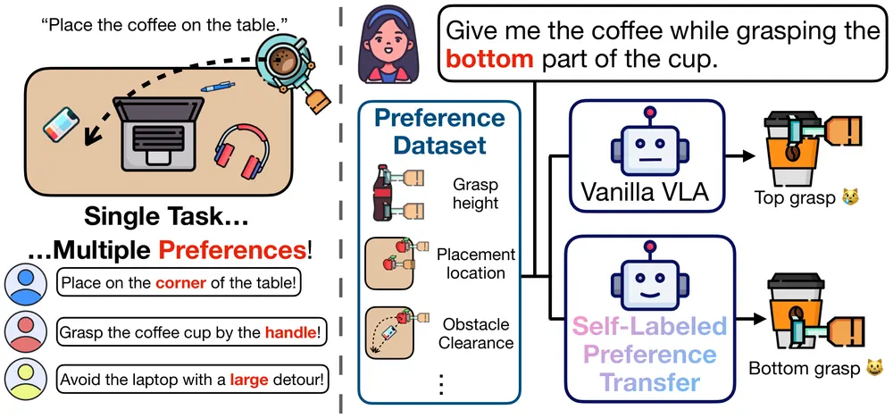
무슨 문제인가
VLA는 같은 과제를 여러 방식으로 수행할 수 있지만, 보통의 과제 지시문은 어디를 잡을지나 장애물을 얼마나 돌아갈지 같은 수행 방식(execution preference)을 정하지 않음. 기존 steerable VLA 연구는 demonstration마다 수행 방식을 글로 적은 라벨을 붙여 학습하므로 새 과제마다 라벨 작업이 다시 필요함. 저자들은 라벨 없는 target demonstration으로 그냥 fine-tuning하면 과제 성공률은 오르지만 source에서 배운 preference 명령에 반응하는 능력은 약해짐을 보임. 따라서 source 과제의 preference 라벨을 새 과제에 다시 쓸 수 있는지가 이 논문의 질문임.
어떻게 푸나
SPT(Self-Labeled Preference Transfer)는 두 단계로 학습함. Stage A에서는 하나의 vision-language backbone(Qwen3-VL-4B 기반 기존 VLA인 StarVLA-α)이 두 일을 같이 배움. 하나는 과제 지시문 뒤에 "Preference: grasp low" 같은 문구를 붙인 입력을 받아 action chunk를 내는 일임. 다른 하나는 짧은 demonstration 영상과 end-effector 상태를 보고 "어느 preference였는가"라는 질문에 단일 token으로 답하는 recognition임. Stage B에서는 recognizer를 고정하고, 라벨 없는 target demonstration마다 preference를 예측해 지시문에 붙임. 그다음 Stage A policy의 복사본을 이 self-label 데이터에 action loss만으로 fine-tuning함. 배포할 때는 사용자가 preference를 명령에 넣고 policy만 실행되므로 추가 모델 호출이 없음.
결과
- RoboTwin 2.0(양팔 로봇 조작 시뮬레이션 benchmark)의 pick-and-place에서 다섯 preference 축(contact height, release height, clearance, orientation, placement)을 실험함. preference following은 rollout 중 명령한 preference를 모두 지킨 비율임. recognizer의 target 라벨 정확도는 평균 96.4%이고, 같은 질문을 받은 Qwen3-VL-4B zero-shot은 51.8%임. 평균 preference following은 Naive FT 59.4%에서 SPT 83.8%로 오르고, 과제 성공률은 88.0%와 89.2%로 비슷함. 다만 clearance와 orientation 축에서는 SPT의 과제 성공률이 더 낮음.
- 같은 Stage A checkpoint에서 출발한 ablation(placement, contact height 축)에서 라벨 없이 fine-tuning하면 preference following이 52%와 50%로 내려감. recognizer가 붙인 target 라벨을 무작위로 섞어 붙인 경우는 50%와 55%이고, SPT는 83%와 90%를 유지함. 정답 라벨 100개를 쓴 Oracle GT는 98%와 96%임.
- 두 preference(놓는 높이와 놓는 위치)를 한 명령에 같이 줄 때 두 조건을 모두 지킨 비율이 SPT 93.8%, 라벨 없는 fine-tuning 42.5%임. 이 실험은 학습에서 본 네 조합만 평가함.
- UR5e 실로봇에서 장애물 회피 거리는 pick-and-place에서 그릇 밀기로, 치는 방식(직접 샷, 뱅크 샷)은 에어하키에서 당구로 옮김. 40회 시도 중 preference를 지킨 횟수가 Naive FT 21회에서 SPT 37회로 오름. 과제 성공은 36회와 38회임.
한계
preference 어휘는 고정되어 있고, 실험은 대부분 이진 preference이며, target demonstration에 원하는 수행 방식이 이미 들어 있어야 함. 시뮬레이션 target은 축마다 과제 1개이고, 실로봇은 과제 전이 2개에 명령당 10회 평가뿐임. 초록에는 preference following이 84.8%로 적혀 있으나 본문과 Table II는 83.8%임. 원문에 코드나 프로젝트 주소는 없음.
누리랩 연구와의 연결
- 고정된 recognizer로 라벨 없는 demonstration에 행동 속성 라벨을 붙이는 구조는 failure detection에서 성공/실패나 실패 유형 라벨을 새 과제로 옮기는 문제에 그대로 적용해 볼 수 있음.
- language feedback으로 VLA 행동을 조정하는 연구에서, 새 과제마다 라벨을 다시 달지 않고 source 라벨을 재사용하는 비교 기준으로 쓸 수 있음.
6
70점
CSO: Refining Robotic Policies via Skill Distribution Alignment and Skill-Grained Optimization
RL
relevance 8/10
NeurIPS 2026 채택
Robotics (cs.RO)
VQ 계열 skill token policy를 성공 rollout으로 먼저 지도학습하고, 이어서 skill 단위 importance ratio로 RL fine-tuning하는 2단계 post-training 방법 CSO를 제안함. QueST식 policy의 LIBERO 4개 suite 평균 성공률이 80.1%에서 97.5%로 오름.
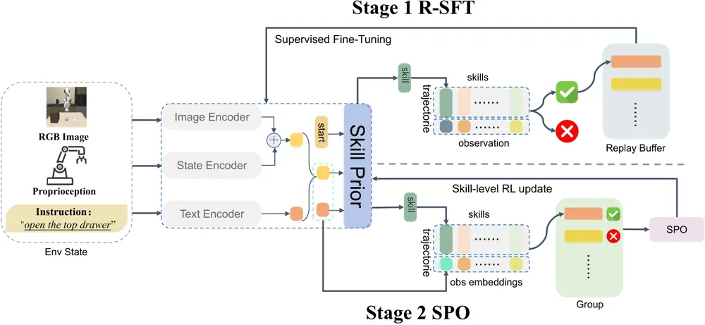
무슨 문제인가
QueST처럼 연속 action chunk를 VQ-VAE나 FSQ(finite scalar quantization)로 이산 token 열(skill)로 바꿔 autoregressive하게 고르는 policy는 imitation learning만으로 학습됨. 양자화 오차 때문에 skill은 전문가 action의 근사일 뿐이고, 실행 중 오차가 쌓이면 demonstration에 없던 상태로 밀려남. 이를 online RL로 보완하려 하면 두 가지가 걸림. online으로 모은 rollout은 쉬운 과제에 성공이, 어려운 과제에 실패가 몰려 결과가 치우침. 그래서 observation encoder가 받는 gradient 신호가 일관되지 않아 학습이 불안정함. 또 결정 단위(skill 하나)와 최적화 단위(token 하나 또는 episode 전체)가 맞지 않음.
어떻게 푸나
CSO(Cascaded Skills Optimization)는 action tokenizer와 decoder를 고정한 채 skill을 고르는 부분만 두 단계로 다시 학습함. 1단계 R-SFT(Rejection-Sampling Supervised Fine-tuning)는 높은 temperature로 policy를 돌려 성공 궤적만 모음. 한 초기 상태에서 N번 시도가 모두 실패하면 그 상태는 버리고 새 상태를 뽑음. 모은 (관측, 실제로 실행한 skill) 쌍으로 imitation loss를 다시 최소화한 뒤 observation encoder를 고정함. 2단계 SPO(Skills Policy Optimization)는 같은 초기 상태에서 K개 궤적을 묶어 굴리고, 성공 여부 binary reward에서 group 평균을 뺀 값을 advantage로 씀. 모든 궤적의 reward가 같은 group은 advantage가 0이라 버림. 그 궤적의 모든 skill은 같은 advantage를 나눠 갖고, importance ratio와 PPO식 clipping은 8개 token으로 된 skill마다 따로 계산함. 입력은 다시점 RGB, proprioception, 언어 지시이고 출력은 decoder가 연속 action chunk로 바꾸는 skill token 열임.
결과
- LIBERO(시뮬레이션 조작 benchmark, Object·Spatial·Goal·Long 4개 suite)에서 QueST식 policy의 평균 성공률이 80.1%에서 97.5%로 오름. 가장 가까운 online RL baseline인 QueST + RIPT(VLA용 online RL post-training 방법)는 93.6%임. LIBERO-Long은 69.1%에서 96.0%로 오름(과제당 50회, seed 3개).
- 같은 R-SFT checkpoint에서 2단계만 바꾼 LIBERO-Long 비교에서 skill 단위 SPO는 96.0%임. token 단위 GRPO는 94.5%, episode 단위 GSPO는 93.2%, critic을 쓰는 PPO는 94.3%임. 이 표는 seed 간 편차 없이 점 추정만 보고함.
- 구성요소 ablation(LIBERO-Long)에서 R-SFT만 쓰면 85.3%, SPO만 쓰면 91.7%, encoder를 고정하지 않으면 89.6%임. 둘을 다 쓰고 encoder를 고정한 전체 CSO는 96.0%임.
- 실로봇(ALOHA의 한쪽 팔) 조작 과제 5개, 과제당 20회 평가에서 평균 성공률이 QueST 41.0%, QueST + RIPT 55.0%, CSO 61.0%임.
한계
R-SFT는 과제마다 초기 policy가 어느 정도 성공해야 시작할 수 있음(저자는 과제당 성공 궤적 50개로도 동작한다고 보고함). tokenizer와 decoder가 고정이라 표현할 수 없는 동작은 고칠 수 없고, 실로봇 실패 39건 중 11건이 tokenizer 정밀도나 동작 누락 때문임. SPO의 핵심 근거인 granularity 비교는 LIBERO-Long 한 suite의 점 추정이고, 실로봇 학습에 21.5시간과 수동 복구 127회가 들었으며 코드는 아직 공개되지 않음.
누리랩 연구와의 연결
- token 기반 VLA를 online RL로 post-training할 때 ratio와 clipping을 어느 단위로 둘지에 대한 비교 실험임. 성공 궤적 SFT 후 encoder 고정이라는 순서도 VLA RL fine-tuning baseline 설계에 바로 쓸 수 있음.
- 실로봇 실패를 skill 선택, tokenizer 정밀도, 접촉·미끄러짐 등으로 나눈 분류는 failure diagnosis 연구에서 실패 유형 정의의 참고 자료가 됨.
7
68점
3D Occupancy-Language Fields from mmWave Radar
3D Vision
relevance 6/10
CoRL 양식 (추정)
Robotics (cs.RO)
회전하는 mmWave radar 관측만으로 장면 3D 점유와 CLIP 언어 특징을 한 좌표계에 합친 field를 만들어, 새 건물에서도 "Things to sit" 같은 자유 문장으로 장면을 검색함. 학습에 쓰지 않은 건물에서 radar가 예측한 언어 특징과 카메라 특징의 평균 cosine similarity가 91.92%임.
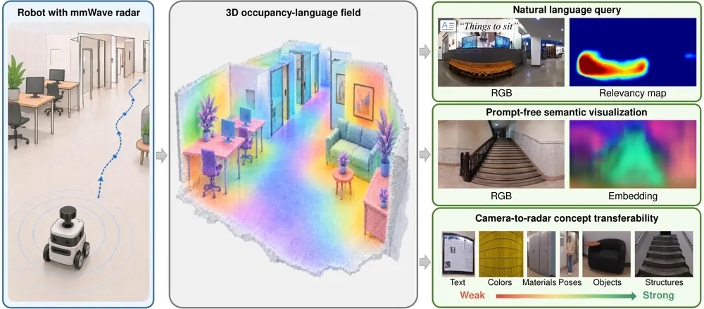
무슨 문제인가
mmWave radar는 연기나 어둠에서도 장면 형상을 복원하지만, 그 영역이 무엇이고 어디에 쓰이는지는 알려 주지 않음. 기존 RF(radio frequency) 신호 기반 인식은 미리 정한 label 중에서 고르고, 최근 radar-language 모델의 설명은 한 frame이나 동작 열에 묶여 있어 3D 위치와 연결되지 않음. 움직이는 로봇이 "앉을 곳"을 나중에 찾으려면 여러 시점의 관측이 같은 물리적 위치로 모여야 함. LERF(Language Embedded Radiance Fields) 같은 카메라 기반 language field는 이것을 하지만, radar로 같은 표현을 만든 연구는 없었음.
어떻게 푸나
TextRadar는 학습 단계와 장면 복원 단계로 나뉨. 학습 단계에서 single-frame radar distillation model은 panoramic RF volume 하나를 입력받아 range image 하나와 crop 크기가 다른 5개 scale의 768차원 CLIP feature map을 같은 격자에 출력함. range와 언어 특징은 한 decoder를 같이 쓰고 마지막 head만 나뉨. 정답 range는 LiDAR에서 얻고, 정답 언어 특징은 카메라 이미지 crop의 OpenCLIP embedding을 LiDAR 점에 투영해 만듦. 카메라는 앞쪽 일부만 보므로, 로봇 이동과 LiDAR 형상으로 카메라 특징을 3D reference map에 쌓아 panorama 전 방향의 정답을 만듦. 새 장면에서는 radar만으로 range와 언어 특징을 예측하고, radar odometry와 loop closure로 얻은 pose로 이를 한 좌표계에 등록함. 이 관측으로 장면마다 occupancy field와, 3D 위치와 context scale을 받아 언어 특징을 내는 language field를 fitting함(LERF 방식). 질의 문장의 CLIP text embedding과 표면 특징의 cosine similarity로 관련 영역을 표시함.
결과
- 7개 건물에서 모은 약 2만 frame으로 건물 하나씩을 빼고 학습함(leave-one-building-out). 빠진 건물에서 평균 range 오차는 16.38 cm, radar-카메라 특징 cosine similarity 평균은 91.92%임.
- 카메라 CLIP 반응을 정답으로 본 개념 일치도는 범주별로 차이가 큼. 두 문장 중 카메라가 고른 쪽을 고르는 비율이 물체·구조는 0.825, 재질은 0.856, 자세는 0.755임. 색은 0.669, 글자는 0.579로 우연 수준 0.50에 가까움.
- 같은 CNN에서 range와 언어 decoder를 나누면 cosine similarity가 91.92%에서 90.08%로 내림. range 오차 차이는 0.03 cm임. DPT transformer로 바꾸면 88.36%로 내리고 학습 시간은 약 2배임.
- 장면 수준 질의("Ceiling", "Stairs", "Things to sit" 등)는 그림으로만 보였고 정량 평가는 없음. "Trash bin", "Human"은 다른 표면까지 반응이 퍼짐.
한계
장면 수준 질의 정확도를 사람이 표시한 3D 정답으로 잰 결과가 없고, 형상만 쓰는 baseline이나 카메라 기반 language field와의 비교도 없음. 개념 일치도의 정답은 카메라 CLIP 특징이라, radar가 재질을 감지한 것인지 물체 종류와 맥락으로 맞힌 것인지 가려지지 않음. 정적 장면만 다루고, 768차원 특징을 저장하는 비용이 크며, 코드와 데이터는 요청 시에만 제공함.
누리랩 연구와의 연결
- 카메라가 안 되는 환경에서 open-vocabulary semantic mapping을 만드는 방법임. 시각 기반 language field나 scene graph 위에 radar 관측을 더해 navigation/VLN의 장면 기억을 보강하는 비교 대상이 됨.
- 카메라 특징을 다른 센서로 distillation할 때 전달되는 개념과 안 되는 개념을 범주별로 잰 평가 방식은 tactile 등 다른 modality로 CLIP 특징을 옮기는 연구에 그대로 쓸 수 있음.
8
66점
What Should a Navigator Remember? Spatiotemporal Memory for Zero-Shot Vision-Language Navigation
Navigation
relevance 8/10
ICLR 양식 (추정)
Robotics (cs.RO)
8B 규모 open model로 zero-shot VLN을 할 때 지시 진행 상황, pose가 붙은 관측 기록, 누적 지도를 서로 다른 memory로 나눠 유지함. R2R-CE val-unseen 성공률이 같은 Qwen3-VL-8B 기반 zero-shot 비교 방법 중 가장 높은 0.263임.
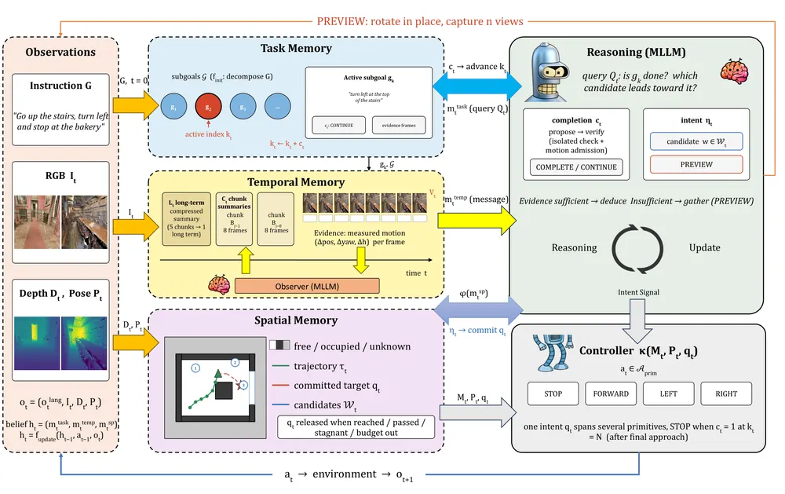
무슨 문제인가
Zero-shot VLN은 navigation 데이터로 학습하지 않은 VLM이 처음 보는 건물에서 언어 지시를 따라 이동하는 과제임. 지금 보이는 장면만으로는 부족하고, 지시의 몇 번째 단계에 와 있는지와 앞에서 본 장면을 함께 따져야 함. 저자들이 재현한 HSGM(기하·semantic·결정 정보를 정리해 subgoal 추론과 waypoint 계획에 쓰는 기존 방법)에서 reasoner를 GPT-5에서 Qwen3-VL-8B로 바꾸면 성공률이 0.463에서 0.049로 내림. 작은 open model에 navigation 기록을 어떤 형태로 넘겨야 하는지가 이 논문의 질문임.
어떻게 푸나
agent는 매 step RGB, depth, pose를 받아 세 memory를 갱신함. task memory는 지시를 차례가 정해진 subgoal 목록으로 나누고 현재 subgoal 번호를 기록함. temporal memory는 최근 8개 관측을 그대로 두고, 8개마다 묶음 요약을 만들고, 요약 5개가 쌓이면 다시 장기 요약 하나로 압축함. 이 요약은 지시를 보지 않는 8B observer(JoyAI-VL-Interaction-8B)가 쓰고, 각 요약에는 해당 구간의 pose와 궤적이 붙음. spatial memory는 depth를 바닥 평면에 투영한 occupancy map(free, occupied, unknown)과 궤적, 현재 목표 좌표를 담음. Qwen3-VL-8B reasoner는 세 memory를 보고 현재 subgoal 완료 여부와 다음 waypoint를 고르며, 근거가 부족하면 제자리 회전으로 시야를 더 모으는 PREVIEW를 요청함. 고른 waypoint는 world 좌표로 고정되고, geometric controller가 지도 위 경로를 짜서 FORWARD, LEFT, RIGHT, STOP 동작으로 실행함.
결과
- R2R-CE val-unseen(연속 환경 실내 언어 지시 navigation)에서 성공률 0.263, SPL(경로 길이로 보정한 성공률) 0.196을 얻음. Qwen3 계열 모델로 재현한 zero-shot 방법 SmartWay 0.178, Open-Nav 0.107, HSGM 0.049보다 높음. post-training 방법인 AwareVLN 0.647보다는 크게 낮음.
- temporal memory를 빼고 최근 raw image 8장만 주면 성공률이 0.263에서 0.190으로 내리고 평균 경로 길이가 16.9 m에서 39.1 m로 늘어남. 반면 목표 영역을 한 번이라도 지난 비율(OSR)은 0.328에서 0.475로 오름. 목표 근처를 지나가도 멈추지 못하는 경우가 늘었다는 뜻임.
- waypoint를 고르는 intent action 대신 primitive action을 직접 고르게 하면 성공률이 0.125로 내림. spatial memory를 빼면 0.205, PREVIEW를 빼면 0.190임.
- Unitree Go2로 복도와 사무실에서 단순 지시와 복합 지시를 시험함. 사무실 복합 지시에서 성공률(2.0 m 이내 정지)이 이 방법 0.4, AwareVLN 0.0임. 네 조건 모두에서 성공률이 더 높고 navigation error가 더 낮음.
한계
VLM 호출이 episode당 131회로 HSGM의 11.7회보다 많고, episode당 총 token도 약 88만 개로 HSGM의 약 27만 개보다 많음. 실로봇 실험은 환경 2곳과 지시 유형 2개뿐이고 조건별 시도 횟수는 본문에서 확인 불가함. 코드는 accept 후 공개 예정이라고만 적혀 있음.
누리랩 연구와의 연결
- robot memory를 역할별(task 진행, 관측 기록, 기하)로 나누고 하나씩 빼 보는 ablation 설계임. 관측 기록을 빼면 목표를 지나치고 멈추지 못한다는 결과는 memory가 정지 판단에 쓰인다는 근거로 인용할 수 있음.
- 근거가 부족할 때 PREVIEW로 시야를 더 모으는 구조는 active perception과 이어짐. 다만 언제 PREVIEW를 부를지는 VLM 판단에 맡겨 두어 따로 분석하지 않음.
9
63점
Echo: Scaling Visual Reinforcement Learning with Off-policy Experience
RL
relevance 8/10
CoRL 양식 (추정)
Robotics (cs.RO)
시각 policy를 따라 하는 state 기반 보조 policy가 렌더링 없이 경험을 모으고, 공유 critic이 그 경험으로 시각 policy를 직접 학습시킴. Genesis의 손 조작 과제 2개에서 SDPG의 기준 return에 도달하는 시간을 평균 56% 줄임.
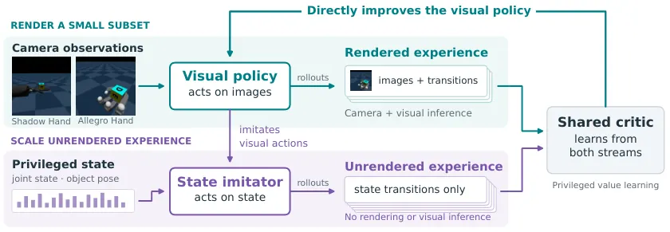
무슨 문제인가
GPU 병렬 시뮬레이션으로 RL을 키울 때 시각 policy는 매 step 카메라 렌더링과 시각 network 추론이 필요해서 state 기반 RL보다 비용이 훨씬 큼. 그래서 privileged state로 teacher를 먼저 학습하고 시각 student가 teacher의 행동을 따라 하게 하는 2단계 distillation을 흔히 씀. 이 방식에서는 teacher가 student에게 없는 정보에 기대어 행동하면 student가 그 행동을 재현하지 못하는 imitation gap이 생김. 시각 policy를 RL로 직접 최적화하면 이 문제는 없음. 이렇게 하는 기존 방법 SDPG는 렌더링을 일부 환경으로 줄이지만, on-policy이고 렌더링하지 않은 perturbation rollout으로 gradient를 추정하므로 모은 경험을 다시 쓰지 못함.
어떻게 푸나
Echo는 FastTD3(병렬 시뮬레이션용 off-policy actor-critic)를 바탕으로 한 단일 단계 off-policy RL임. 병렬 환경 4096개 중 64개에서만 시각 policy가 84×84 RGB 이미지를 받아 행동하고, state와 이미지 쌍을 저장함. 나머지 4032개에서는 state imitator(privileged state를 입력으로 받는 보조 policy)가 렌더링 없이 행동함. state imitator는 시각 policy의 noise 없는 행동을 action MSE로 따라 하도록 학습되며, 저자는 teacher-student와 방향이 반대라서 이를 inverse distillation이라 부름. 두 흐름의 transition은 모두 공유 replay에 들어가 privileged state를 입력으로 받는 critic Q(s, a)를 학습시킴. 렌더링하지 않은 transition에는 다음 이미지가 없으므로 TD target의 다음 행동은 state imitator의 EMA(지수 이동 평균) 사본이 대신 냄. 시각 policy는 렌더링된 (state, 이미지) 쌍에서 critic을 고정한 채 Q(s, π(o))의 action gradient로 직접 갱신되고, 배포 시에는 시각 policy만 씀.
결과
- Allegro Hand(카메라 이미지로 손 안의 정육면체를 목표 자세로 돌리는 과제)에서 SDPG가 3시간 학습해 도달한 평균 return을 기준으로, 이 값에 도달하는 시간이 SDPG 180분에서 Echo 약 96분으로 줄어듦. 최종 평균 return도 약 700 대 600으로 Echo가 높음.
- Shadow Hand(같은 정육면체 회전 과제)에서는 기준 return 도달 시간이 65% 줄었지만 최종 평균 return은 두 방법 모두 약 1100으로 비슷함. 이 과제에서 보인 이점은 학습 속도에 한정됨.
- 보조 환경의 transition까지 셈에 넣은 같은 simulator transition 수에서도 두 손 과제 모두 Echo의 평균 return이 SDPG보다 높음.
- locomotion 과제 3개(Hopper, Walker, Ant)에서 기준 return 도달 시간은 평균 60% 줄고 최고 평균 return은 62% 높음. 이 평균은 Ant 한 과제의 값(도달 시간 89% 단축, 최고 return 136% 상승)이 끌어올린 것이고, Walker의 도달 시간 단축은 25%임. 모든 수치는 seed 3개 평균임.
한계
SDPG와 전체 구현끼리 비교해서 architecture와 hyperparameter가 맞춰지지 않았고, 렌더링 환경만 쓰는 FastTD3 baseline이 없어 보조 경험 자체의 기여는 분리되지 않음. Ant의 SDPG 곡선은 'best 3'으로 표기된 선택된 실행이고, imitator 오차도 시각 policy가 방문한 state에서만 재서 보조 rollout state에서의 추종 정확도는 확인되지 않음. 실험은 Genesis 시뮬레이션뿐이고 실로봇 전이, 총 계산량 절감, 코드 공개 주소는 본문에서 확인 불가함.
누리랩 연구와의 연결
- 추론이 비싼 policy를 RL로 직접 학습할 때 값싼 state policy로 경험을 모으고 privileged critic의 gradient로 비싼 policy를 고치는 구조임. VLA online RL fine-tuning에서 비교할 설계로 쓸 수 있으나, 저자도 VLA 확장은 실험하지 않았음.
- dexterous manipulation의 sim RL에서 teacher-student distillation 대신 쓸 수 있는 단일 단계 방법임. tactile처럼 시뮬레이션 비용이 큰 감각 입력을 쓰는 policy 학습에도 같은 분리를 시험해 볼 수 있음.
10
63점
SimRetract: Zero-Shot Sim-to-Real Robotic Assistance for Retractor Take-Over in Open Surgery
Manipulation
relevance 8/10
Robotics (cs.RO)
개복 수술에서 외과의가 잡고 있는 견인기(retractor)를 로봇 팔이 넘겨받는 과제를, 시뮬레이션 demonstration만으로 fine-tuning한 π0 policy로 실로봇에서 바로 수행함. 외과의가 천을 덮은 복부 팬텀 위에 정한 자세 50개에서 90%를 잡고 78%에서 견인 상태를 유지함.
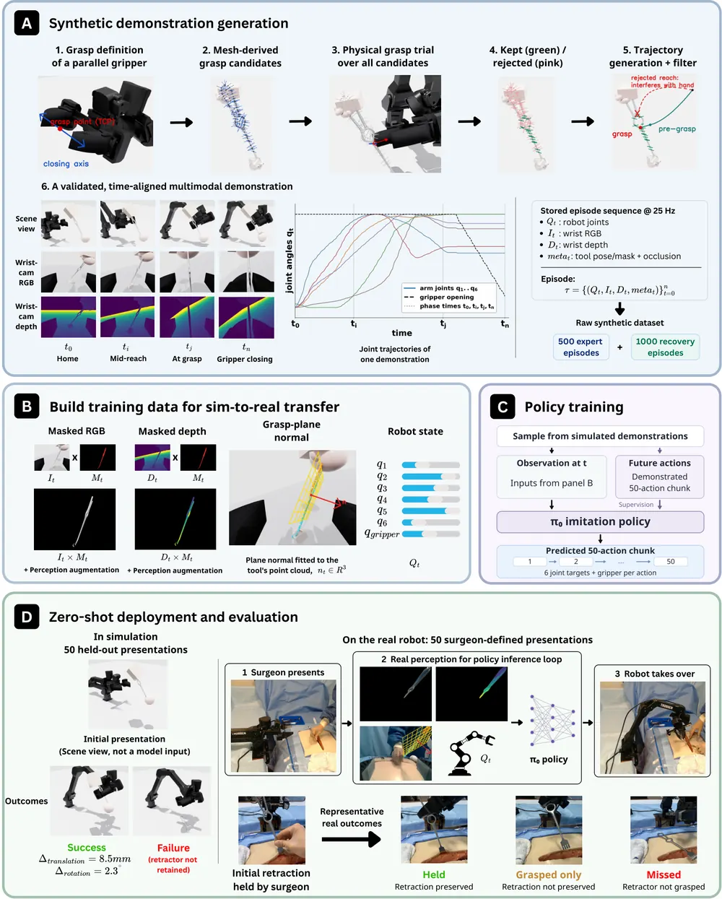
무슨 문제인가
개복 수술에서는 외과의가 견인기로 노출 범위를 정한 뒤 보조자가 넘겨받아 그 자세를 유지함. 로봇이 이 일을 대신하려면 손에 일부 가려진 기구를 찾아 좁은 손잡이 부분에 gripper 패드를 정렬해 잡아야 하고, 잡는 순간 기구가 밀리면 노출 범위가 바뀜. 실제 demonstration으로 imitation learning을 하면 배경·조명·시점이 바뀔 때 성능이 낮아지고, 여러 수술 환경에서 전문의 시연을 모으는 비용이 큼. 기존 수술 sim-to-real 연구는 대부분 da Vinci 같은 최소침습 플랫폼과 훈련용 과제에 머물렀음.
어떻게 푸나
SimRetract는 Isaac Sim에서 스크립트 expert가 만든 demonstration만으로 π0를 fine-tuning하는 framework임. expert는 시뮬레이터의 정확한 기구 자세를 써서 mesh에서 뽑은 grasp 후보 중 패드가 손잡이 평면과 평행한 것을 고름. 접근 궤적은 곡선으로 다가간 뒤 마지막 3 cm를 직선으로 들어가는 형태(standoff)이고, IK로 관절 목표로 바꾼 뒤 관절 목표 변화량을 제한함. 접근 중 기구를 3 mm 또는 3도 넘게 움직이거나, 놓은 뒤 기구가 10 mm 또는 10도 넘게 틀어진 궤적은 버림. 정상 궤적 중간에서 팔 자세를 무작위로 흔든 뒤 다시 계획한 복구 구간(perturbation-recovery, PR)을 더해 expert 500개와 PR 1,000개로 데이터셋을 구성함. policy 입력은 기구 mask를 씌운 wrist RGB와 depth, 관절 상태, masked depth의 point cloud에 평면을 맞춰 구한 손잡이 평면 법선임. 학습 때는 mask 침식·누출, depth 잡음, 법선 교란, 근접 구간 입력 dropout을 넣고, 출력은 2초 분량의 관절·gripper 목표 50개임. 실로봇에서는 SAM 3가 text prompt로 기구 mask를 만들고 같은 checkpoint를 fine-tuning 없이 돌림.
결과
- Trossen WidowX AI 팔과 천을 덮은 복부 팬텀에서, 전문의 2명이 정한 견인 자세 50개로 평가함. 기구를 잡은 비율(grasped)은 90%, 놓은 뒤 견인과 노출이 유지된 비율(held)은 78%임. 같은 checkpoint의 held-out 시뮬레이션 grasp 성공률은 94%임.
- 기구 mask를 빼면 시뮬레이션 grasp 성공률은 94%에서 88%로 6퍼센트포인트 내리지만, 실로봇에서는 90%에서 22%로 68퍼센트포인트 내리고 held는 12%임. 전체 모델과 ablation 7개를 합친 8개 설정에서 시뮬레이션 grasp 성공률은 80~96%, 실로봇은 22~90%로 퍼짐.
- PR 데이터를 빼면 실로봇 held가 78%에서 34%로, standoff를 빼면 36%로 내림. 같은 비교에서 grasped는 90%에서 각각 78%, 68%로 내려 held보다 덜 내림. 두 held 비교 모두 Holm 보정 p<0.001임.
- 학습에 없던 기구 중 손잡이가 평평한 Army-Navy 견인기에서 grasped 80%, held 64%이고, 원통형 손잡이의 Richardson 견인기에서 58%, 50%임. 평면 법선 입력을 빼면 Army-Navy held가 18%로 내림.
한계
평가는 실제 조직이 아니라 팬텀에서 했고, 시뮬레이션은 조직 변형 없이 기구 자세로만 견인을 나타냄. 과제 하나와 팔·카메라 구성 하나만 다루며, 실로봇 평가는 설정마다 자세 50개에 1회씩 시도한 것임. 충돌 회피는 학습된 접근 동작에 맡겨져 있고 실시간 충돌 감시가 없으며, 본문에 'Code is available here'라고만 있어 코드 주소는 본문에서 확인 불가함.
누리랩 연구와의 연결
- 실제 demonstration 없이 시뮬레이션 expert 데이터만으로 π0를 fine-tuning해 실로봇에 옮긴 manipulation 사례임. 입력 masking, 복구 demonstration, 접근 궤적 설계 각각의 기여를 시뮬레이션과 실로봇 양쪽에서 잰 ablation 설계를 VLA sim-to-real 연구에서 참고할 수 있음.
- mask 제거 ablation에서 시뮬레이션과 실로봇의 하락폭이 크게 다르게 나온 결과는 시뮬레이션 성공률만으로 policy 실패를 판단하기 어렵다는 사례임. failure 유형(short reach, lateral miss, 조기 접촉)을 나눠 센 분석은 failure detection 연구의 분류 기준으로 쓸 수 있음.
11
60점
How Many Demonstrations Does a VLA Need? On the Sample Efficiency of VLA Finetuning
VLA
relevance 9/10
CoRL (comments 표기)
Computer Vision and Pattern Recognition (cs.CV)
VLA 6종을 LIBERO에서 demonstration 수와 학습 step을 바꿔 가며 fine-tuning해, 전체 데이터 성공률로는 안 보이는 적응 효율 차이를 잼. LIBERO-Spatial 전체 데이터에서 둘 다 97.2%인 π0.5와 GR00T N1.6이 demonstration 50개에서는 94.2% 대 30.8%로 갈림.
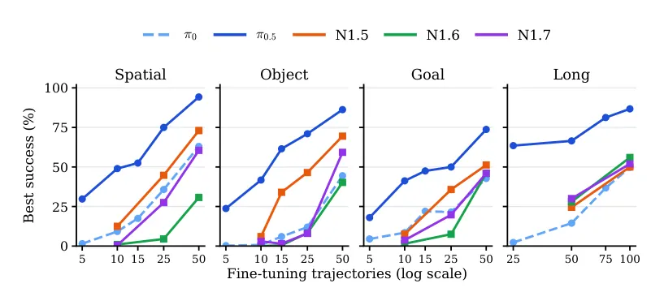
무슨 문제인가
VLA는 보통 zero-shot 성능이나 benchmark 전체 데이터로 fine-tuning한 성공률로 비교됨. 두 숫자 모두 새 환경에 맞추는 데 demonstration과 계산이 얼마나 드는지는 보여 주지 않음. 실제 배치에서는 demonstration을 조금만 모을 수 있는 경우가 많아서, 적은 데이터로 얼마나 빨리 적응하는지가 pretrained policy를 고르는 기준이 됨. 저자는 LIBERO-Spatial에서 6개 중 5개 모델이 전체 데이터로는 97~99%에 이르지만 demonstration 50개로는 31~94%로 벌어진다고 지적함.
어떻게 푸나
새 방법을 제안하지 않고 behavior cloning fine-tuning의 효율을 재는 실험 연구임. 대상은 같은 PaliGemma VLM과 flow-matching action expert를 쓰고 pretraining 방식만 다른 π0·π0.5임. 여기에 VLM에 diffusion-transformer action head를 붙인 GR00T N1, N1.5, N1.6, N1.7을 더함. 각 모델을 공개된 base checkpoint에서 시작해 LIBERO 4개 suite에 전체 파라미터 fine-tuning을 함. Spatial·Object·Goal은 물체 배치·물체 종류·목표 중 한 요소만 바꾼 단기 과제 10개씩이고, Long은 여러 하위 과제를 잇는 장기 과제 10개임. 데이터 축에서는 suite 전체 demonstration 수 B(이하 budget)를 5~100개로 바꾸고, 계산 축에서는 전체 데이터로 학습하며 성공률 70/80/90%에 처음 닿는 step을 잼. 데이터 효율은 기준 모델이 B개로 낸 성공률을 비교 모델이 따라잡는 가장 작은 B′를 찾아 B/B′로 계산함. 마지막으로 VLM을 고정하고 action head만 학습해, pretraining 때 VLM을 고정했는지(GR00T)와 함께 학습했는지(π 계열)가 적응에 드러나는지 봄.
결과
- 같은 구조의 π0와 π0.5를 비교하면 π0.5가 모든 suite와 budget에서 더 높음. Spatial에서 π0.5의 demonstration 25개 성공률은 75.0%로, π0의 50개 성공률 63.0%보다 높음. Long에서는 π0.5의 25개(63.5%)가 π0의 100개(49.8%)를 넘어 4배 이상 차이임.
- 전체 데이터로 학습하면 두 모델의 최고 성공률은 비슷하지만, 목표 성공률에 닿는 학습 step 수가 크게 다름. Spatial 최고 성공률은 π0.5 97.2%, π0 97.7%이고, 80%에 닿는 step은 π0.5 400 step, π0 2,000 step임. Long 최고 성공률은 π0.5 98.0%, π0 85.0%임.
- GR00T 안에서는 zero-shot 성능이 더 좋다고 보고된 N1.6·N1.7이 N1.5보다 적은 데이터에서 낮음. demonstration 25개 성공률이 N1.5는 Spatial 44.8%, Object 46.5%, Goal 35.8%이고 N1.6·N1.7은 4.5~27.5%임. Long에서는 N1.6·N1.7이 조금 앞섬.
- VLM을 고정하고 action head만 학습하면 π 계열만 크게 내려감. 전체 데이터 Long 성공률이 π0는 85%에서 30%로, π0.5는 98%에서 47%로 내려감. GR00T N1.5~N1.7은 Spatial과 Long에서 6퍼센트포인트 하락부터 1퍼센트포인트 상승 사이에서만 변함.
한계
모든 실험이 LIBERO 시뮬레이션이고 실로봇 실험은 없음. GR00T는 계산 제약으로 일부 budget만 돌렸고 Object 전체 데이터 결과가 없으며, budget sweep은 계열마다 seed 하나로 돌림. 두 계열은 데이터·구조·크기·learning rate schedule이 함께 달라서, VLM 고정 여부가 원인이라는 해석은 상관관계 수준의 근거임.
누리랩 연구와의 연결
- 새 manipulation 과제에 적은 demonstration으로 VLA를 붙일 때 base model을 고르는 근거가 됨. LIBERO 기준으로 π0.5는 suite당 demonstration 25개만으로도 Long 성공률이 63.5%임.
- VLA 적응 방법을 비교할 때 전체 데이터 성공률 대신 demonstration 수와 step에 따른 곡선을 보고하는 평가 방식으로 쓸 수 있음. action head만 바꾸는 적응을 설계한다면 backbone이 pretraining 때 VLM을 고정했는지부터 확인해야 함.
12
58점
SaiVLA-JEPA: Evaluating Future Latent Prediction in JEPA-Conditioned VLA Control
VLA
relevance 9/10
CoRL 양식 (추정)
Robotics (cs.RO)
frozen V-JEPA feature를 받는 flow matching으로 action을 만드는 VLA에 미래 latent 예측 loss를 더해도 closed-loop 성공률이 오르지 않음을 짝지은 rollout으로 보임. LIBERO-Plus 10,030 episode에서 이득은 V-JEPA feature 입력 자체에서 왔음(71.63%에서 82.45%).
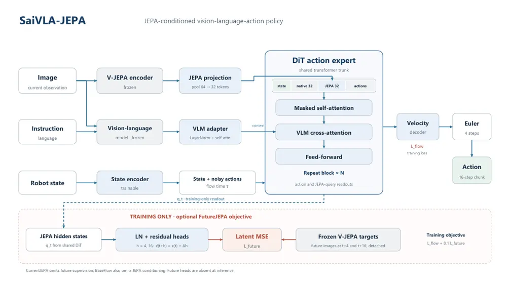
무슨 문제인가
V-JEPA 같은 JEPA(joint-embedding predictive architecture)는 픽셀 대신 표현을 예측해 장면 변화를 모델링함. 이런 미래 표현 예측을 VLA 학습의 보조 loss로 넣으면 제어가 좋아진다는 기대가 있고, 동시대 연구 VLAFlow도 이득을 보고함. 하지만 action loss만으로는 policy가 장면 표현의 시간 변화를 배우도록 강제되지 않음. 현재 JEPA feature만 넣은 대조군과 짝지어 비교하지 않으면, 성능 차이가 feature 입력에서 왔는지 미래 예측 loss에서 왔는지 가를 수 없음.
어떻게 푸나
SaiVLA-JEPA는 고정된 VLM과 DiT action expert(flow matching으로 action을 만드는 transformer)로 된 policy 계열임. 현재 이미지를 고정된 V-JEPA 2.1 encoder에 넣고, 64개 token을 32개로 줄여 action expert의 입력 sequence에 덧붙임. FutureJEPA 변형은 학습 때만 residual head 두 개를 붙여 4 step 뒤와 16 step 뒤의 V-JEPA 표현을 예측하고, flow loss에 0.1 가중치로 더함. 추론 때는 이 head를 빼므로 4-step Euler sampler로 action 16개짜리 chunk를 내는 경로는 세 변형(FutureJEPA, CurrentJEPA, BaseFlow)이 같음. 대조군은 미래 loss만 뺀 CurrentJEPA와 JEPA 입력까지 뺀 BaseFlow이며, 세 policy 모두 25,000 step 학습함. 이와 별개로 test-time adaptation 두 가지를 평가함. TCA(test-time context adaptation)는 가중치를 고정하고, 실행한 4-action 구간의 latent 예측 오차로 32차원 context를 gradient 2 step 갱신해 다음 chunk와 재시도에 씀. TPA(test-time parameter adaptation)는 일부 가중치를 온라인으로 갱신함.
결과
- LIBERO-Plus(LIBERO 4개 suite 기반의 robustness 평가용 조작 benchmark) 10,030 episode 성공률은 BaseFlow 71.63%, CurrentJEPA 82.45%, FutureJEPA 81.99%임. 초기 상태와 action noise를 짝지은 비교이며, suite별 step 상한은 300 또는 600임.
- 모든 suite를 300 step으로 둔 원래 protocol에서 FutureJEPA와 CurrentJEPA의 차이는 0.03퍼센트포인트임. McNemar p=0.958, bootstrap 95% 구간은 -0.73에서 0.77퍼센트포인트로, 미래 예측 loss의 이득은 검출되지 않음.
- 미래 loss 가중치를 0.1에서 0.3, 1.0으로 올리면 16 step 뒤 latent 예측 MSE는 18%, 33% 내림. 전체 성공률은 82.70%, 82.80%로 0.71, 0.81퍼센트포인트만 오르고, 다중 비교 보정 전 p는 0.0552, 0.0361임.
- TCA 재시도(실패 뒤 마지막 context를 0.1배로 줄여 다음 시도에 넘기는 fixed decay 설정)는 CurrentJEPA의 성공률을 81.00%에서 88.87%로 올림. 81.00%는 별도 평가 run의 1회 시도 값이라 위의 82.45%와 다름. 단, baseline은 1회 시도, TCA는 최대 5회 시도라 environment step이 약 2.17배임. 같은 시도 횟수의 no-context 대조군은 없음.
한계
모든 결과가 LIBERO-Plus 시뮬레이션이며 실로봇 실험은 없고, 각 변형은 학습 run 하나뿐임. TCA 이득은 시도 횟수와 계산량이 다른 비교라 context 기억 효과로 볼 수 없고, context adapter는 다른 checkpoint(3,000 step FutureJEPA)에서 학습해 옮겨 씀. TPA 결과 표는 제공된 텍스트에서 잘려 수치 확인 불가이며, 초록은 고정 policy 대비 일관된 이득이 없다고만 적음.
누리랩 연구와의 연결
- world model식 미래 latent 예측을 VLA 보조 loss로 쓸 때 latent loss 감소가 closed-loop 성공으로 이어지지 않는다는 짝지은 negative result임. world model 보조 학습을 제안할 때 CurrentJEPA 같은 대조군과 McNemar 검정을 갖춰야 한다는 기준으로 쓸 수 있음.
- 실행한 transition의 latent 예측 오차로 context를 고쳐 다음 시도에 넘기는 TCA는 failure recovery와 test-time optimization 연구의 비교 대상임. 같은 시도 횟수 no-context 대조군이 빠진 점은 우리 실험 설계에서 보완할 부분임.
13
55점
CuraEval: Evaluating Demonstration Curation on Mixed-Skill Robot Data
Imitation Learning
relevance 8/10
CoRL 2026 채택
Robotics (cs.RO)
demonstration 선별 방법을 크기를 맞춘 random subset, 전체 데이터 학습과 같은 학습 예산으로 비교하는 평가 틀 CuraEval을 제시함. 평가한 PSD(power spectral density) 점수는 square 과제에서 episode 길이와 거의 같은 순위를 내고(ρ=0.999), 어떤 선별 조건도 Holm 보정 후 전체 데이터 학습보다 유의하게 높지 않았음.
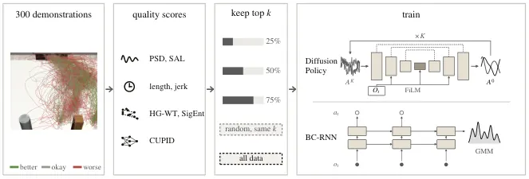
무슨 문제인가
로봇 imitation learning에서 demonstration을 골라 쓰는 방법이 random 선별이나 전체 데이터 학습보다 실제로 나은지 판단하기 어려움. 기존 방법은 궤적의 부드러움(smoothness), 다양성(diversity), policy 성능에 대한 영향(influence)으로 demonstration에 점수를 매김. 그런데 방법마다 선별 절차, 학습 예산, checkpoint 보고 방식이 달라 결과를 서로 비교할 수 없음. 이 논문은 인위적으로 넣은 결함이 아니라 숙련도가 다른 사람 조작자 사이의 자연스러운 차이(mixed-skill data)에서 이 문제를 다룸.
어떻게 푸나
CuraEval은 점수 정의를 수식으로 분석하는 부분과 통제된 선별 실험 부분으로 이뤄짐. 입력은 robomimic(시뮬레이션 조작 demonstration 모음)의 can, square, transport 과제별 성공 demonstration 300개임. can과 square는 숙련도 세 단계의 조작자 6명이 모았고, transport는 두 팔 과제로 조작자 숙련도 조합 6개에서 모음. 비교한 점수는 PSD(end-effector 위치 DFT의 전체 power 합), SAL(spectral arc length), episode 길이, jerk, influence 기반 CUPID임. 다양성 점수로는 기존 지표인 geometric entropy와 signature entropy를 저자가 단순화한 HG-WT와 SigEnt를 씀. HG-WT와 SigEnt는 한 demonstration을 뺐을 때 데이터셋 다양성이 줄어드는 양(LOO contribution)으로 순위를 매기거나 greedy로 하나씩 추가해 고름. 각 선별기가 25/50/75%(75/150/225개)를 남기면, 그 subset으로 state 기반 Diffusion Policy와 일부 조건에서 BC-RNN을 같은 gradient step 수로 학습함. 출력인 성공률을 같은 크기의 고정 random subset, 전체 300개 학습과 비교하고, training seed 단위 Welch t-test에 Holm 보정을 적용함.
결과
- PSD 점수는 Parseval 항등식으로 풀면 episode 길이의 제곱과 위치 크기 제곱 평균의 곱과 같음. 그래서 위치 순서를 섞어도 값이 같아 부드러운 궤적과 불규칙한 궤적을 가르지 못함. episode 길이와의 Spearman 상관은 can/square/transport에서 0.998/0.999/0.993임.
- square에서 Diffusion Policy를 50% 보존으로 학습할 때 episode가 짧은 것부터 고르는 선별의 성공률이 random 70.7%에서 76.5%로 오름(Holm 보정 p=0.026). jerk 선별은 77.6%임. 둘 다 전체 데이터 학습의 79.7%보다는 낮음.
- 다양성 지표 변형 HG-WT-LOO는 25% 보존에서 성공률을 내림: square에서 random 62.5% 대비 41.7%, can에서 94.7% 대비 74.0%임. square에서 따로 뽑은 random subset 세 개 각각의 성공률(59.8~62.5%)보다 모두 낮음.
- 같은 square training seed 3개에서 평가 방식만 바꾸면 부호가 바뀜. checkpoint 중 최고값과 50 rollout으로 재는 처음 방식에서는 75% 길이 선별 86.7%, 전체 데이터 76.7%로 선별이 높게 나옴. 마지막 checkpoint, 200 rollout, 공통 평가 seed로 바꾸면 전체 데이터 80.5% 대 선별 79.5%임.
한계
실험은 state 기반 robomimic 시뮬레이션 과제 3개뿐이고, 시각 입력 policy, VLA fine-tuning, 실로봇은 다루지 않음. can은 전체 데이터 성공률이 96.7%로 이미 높고 transport는 수렴이 덜 돼서 결론이 대부분 square 결과에 기대며, 조건당 training seed도 3~6개임. 저자가 밝힌 대로 평가 방식을 중간에 바꾸고 run을 추가한 탐색적 연구이고, Holm 보정을 함께 적용할 비교 묶음은 사후에 정했으며, 다양성 지표는 원 방법이 아니라 단순화한 변형임.
누리랩 연구와의 연결
- VLA나 manipulation policy용 demonstration을 고를 때 smoothness 점수가 사실상 episode 길이만 재는지 먼저 점검하게 하는 사례임. 길이 선별, 크기를 맞춘 random subset, 전체 데이터를 기본 baseline으로 두는 비교 틀로 그대로 쓸 수 있음.
- checkpoint 선택과 rollout 수에 따라 같은 seed의 결론이 뒤집힌 결과는 우리 policy 실험의 보고 방식을 정할 때 근거가 됨. failure detection/recovery와는 직접 연결 약함.
14
50점
Learning from Relative Action Credit for Escaping Local Minima
RL
relevance 8/10
ICRA·IROS·RA-L 계열 양식 (추정)
Machine Learning (cs.LG)
PPO의 critic을 action-value Q(s,a)로 바꾸고, 같은 state에서 뽑은 action들과 비교한 상대 advantage를 더해 중간 단계 reward plateau를 벗어나게 함. 시뮬레이션 peg insertion에서 PPO는 삽입 reward가 끝까지 0이었고, 이 방법은 최대 return의 약 95%에 수렴함.
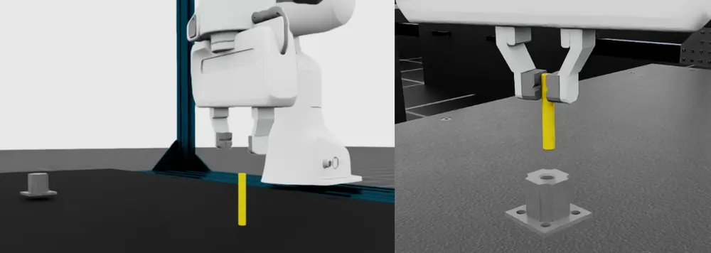
무슨 문제인가
PPO에 단계별 dense reward를 주는 방식은 긴 접촉 조작 과제에서 중간 단계에 멈추는 일이 잦음. Factory(로봇 조립용 접촉 시뮬레이션) 기반 peg insertion(7-DoF 팔이 joint space 명령으로 peg를 잡아 들고 옮겨 구멍에 끼우는 과제)에서 PPO는 대개 삽입 직전에, 때로는 잡기 단계에서 멈춤. 저자들은 원인을 state-value critic V(s)가 action을 구별하지 못하는 데서 찾음. 모든 rollout이 같은 부분 해에 모이면 GAE(Generalized Advantage Estimation) advantage가 0 근처로 줄고, policy 표준편차도 줄어 다음 단계의 접촉 사건을 만날 확률이 낮아진다고 주장함.
어떻게 푸나
PPO+GRPO는 PPO 구조는 그대로 두고 critic만 action-value Q(s,a)로 바꿈. 각 state에서 현재 policy로 action 32개를 뽑아 Q 값을 구하고, 그 평균을 state value로 써서 GAE를 평소처럼 계산함. 같은 Q 값들로 실행한 action의 Q와 group 평균의 차이를 group-relative advantage로 하나 더 만듦(GRPO: 언어 모델 학습에서 한 prompt의 응답들을 group 평균과 비교하는 방법). 두 advantage를 더해 PPO surrogate에 넣음. 두 값은 재는 양이 달라 부호가 자주 엇갈리고, group 평균과 그대로 비교하면 원래 학습 신호가 상쇄됨. 그래서 실제로는 GAE advantage의 부호에 따라 group 최고값 또는 최저값과 비교해 신호를 키우거나 줄임. critic은 실행한 action의 λ-return을 target으로 regression 학습함. 매 optimizer step 뒤 policy 표준편차를 0.25 이상으로 고정해 group 안 action이 서로 달라지게 함.
결과
- IsaacLab GPU 병렬 시뮬레이션의 peg insertion에서 seed 5개 평균으로 비교함. PPO는 reach, grasp, lift까지 배운 뒤 return이 멈추고 삽입 reward는 학습 내내 0임.
- PPO+GRPO는 같은 plateau에 이른 뒤 약 650 training iteration에서 벗어난 뒤 삽입을 일관되게 성공함.
- 같은 표준편차 하한을 준 vanilla PPO는 seed에 따라 멈추거나, PPO+GRPO가 수렴한 학습 예산을 크게 넘긴 뒤에야 벗어남. 이 비교의 수치와 곡선은 본문에서 확인 불가함.
- 하한 없이 표준편차가 줄면 group 안 action이 같아져 group 대비 신호가 효과를 잃음을 보고함. group 안 상위(elite) action으로 탐색 폭을 조정하는 CEM 방식의 초기 변형은 탈출 시점이 불안정했다는 negative result도 적음.
한계
과제 1개, 시뮬레이션만 다룬 2쪽 분량 논문이며 다른 과제와 실로봇은 향후 과제로 남김. baseline은 PPO뿐이고 RND(random network distillation), SAC 같은 탐색 기법과 비교하지 않았으며, 추가 계산이 무시할 만하다는 주장에 시간 측정은 없음. 코드 공개 정보도 본문에 없음.
누리랩 연구와의 연결
- 같은 state에서 뽑은 다른 action을 learned Q로 비교하는 것은 counterfactual action 평가를 RL credit assignment에 쓴 사례임. 접촉이 많은 manipulation RL에서 중간 단계 plateau를 진단하고 벗어나는 방법의 비교 대상으로 쓸 수 있음.
15
48점
When More Planning Hurts: Learned Planners for World Models
World Model
relevance 6/10
Robotics (cs.RO)
world model의 latent 목표 거리를 줄이는 작은 학습 updater(1,505 parameter)를 만들고, planning update를 늘리면 실행 성공이 오르는지 같은 이력에서 비교함. PushT에서 설정 선택에 쓰지 않고 확인용으로 떼어 둔 장면 16개 중 updater는 8개를 풀어, 공개 학습 controller LePlanner의 16개에 못 미쳤음. 같은 이력에서 다음 planning 한 번의 update를 4회에서 12회로 늘리면 16개 context 중 성공이 9개에서 7개로 줄었음.
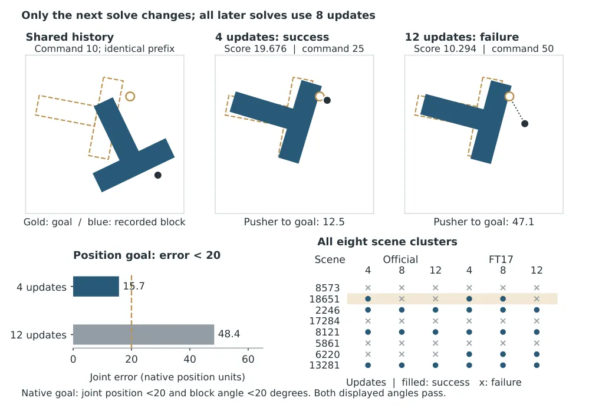
무슨 문제인가
latent world model planning은 행동열을 rollout한 마지막 latent가 목표 이미지 embedding에 가까워지도록 행동열을 최적화함. 최적화를 더 하면 예측 objective 값은 낮아지지만, 그것이 실제 실행 성공으로 이어지는지는 따로 확인되지 않았음. 기존 비교는 controller마다 history 길이, 재계획 주기, 탐색 예산이 함께 달라서 planning 노력 자체의 효과를 가르기 어려움. 학습된 update 규칙이 Adam이나 CEM(cross-entropy method) 같은 일반 optimizer보다 성공률과 계산 시간에서 나은지도 같은 조건에서 검증되지 않았음.
어떻게 푸나
LeWM(LeWorldModel: 픽셀과 행동 궤적으로 학습한 JEPA 계열 latent world model)의 encoder와 predictor를 고정해서 씀. objective는 행동 block(2D 명령 5개 묶음)의 열을 rollout한 마지막 latent와 목표 이미지 embedding 사이의 제곱 거리임. updater는 plan을 이루는 scalar 값 하나마다 12개 feature(행동 값, 정규화된 gradient와 그 부호, cost, horizon 위치, 남은 query 비율 등)를 받아 [-1, 1] 범위의 보정량을 내는 MLP임. 이 head(12→32→32→1)는 모든 좌표와 predictor, horizon에 공유됨. 학습은 task reward를 쓰는 RL이 아니라, 고정된 model 위에서 optimizer가 낸 objective 개선량을 teacher target으로 삼는 회귀임. 각 solve(명령 5개를 실행하기 전 한 번의 plan 최적화)는 방문한 후보 중 objective가 가장 낮은 plan을 고르고, 명령 5개를 실행한 뒤 plan을 한 칸 밀어 다음 solve의 시작점으로 씀. planning 노력의 효과는 같은 10개 명령 이력을 재현한 뒤 다음 solve 한 번에서만 update를 4·8·12회로 바꾸고 이후는 8회로 고정해서 잼.
결과
- PushT(시뮬레이션에서 T자 블록을 밀어 목표 위치와 각도에 맞추는 과제) 확인용 장면 16개에서 같은 LeWM predictor로 controller 4개를 비교함. 성공 장면 수는 updater 8개, Adam 7개, iCEM(표본 효율을 높인 CEM)을 변형한 controller 2개, 공개 LePlanner(6.8M parameter 학습 controller) 16개임.
- 같은 비교에서 16개 과제의 planning과 encoding 시간 합은 updater 59.079초, LePlanner 5.652초, Adam 218.440초, iCEM 49.309초임. updater는 사전에 정한 기준(비교 대상보다 순 성공 3개 이상 많고 시간은 같거나 짧을 것)을 Adam과 iCEM 어느 쪽에 대해서도 충족하지 못함.
- matched continuation 실험(장면 8개 × predictor 2개 = 16 context)에서 update 4·8·12회의 성공 수는 9·8·7개임. update를 늘려서 실패에서 성공으로 바뀐 과제는 없고, 결과가 바뀐 경우는 모두 장면 18651 하나에서 나옴.
- 장면 18651의 official predictor(공개된 원래 predictor)에서 4회 update는 objective 값 19.6764인 plan을 골라 명령 25에서 성공함. 8회와 12회는 더 낮은 값 10.2942인 plan을 고르고 명령 50까지 실패함. 같은 encoder를 공유하는 다른 predictor FT17에서도 12회만 더 낮은 값 7.5485를 고르고 실패함.
한계
실험은 시뮬레이션 PushT 과제 하나와 같은 encoder를 공유하는 관련 predictor, 고정된 재계획 주기에 한정되며 실로봇 결과는 없음. update를 늘려 성공이 줄어든 사례는 장면 하나뿐이고, predictor 오차와 latent 거리의 기하, 행동 support 중 무엇이 원인인지 가르지 않았음. 확인용 장면이 공개 world model pretraining에 쓰였는지 알 수 없음. LePlanner 비교는 용량·학습 데이터·objective가 함께 달라 구조 효과를 분리하지 못함. 코드 공개를 밝혔으나 본문에 주소는 없음.
누리랩 연구와의 연결
- world model 기반 test-time optimization에서 latent objective가 낮아져도 실행은 실패할 수 있음을 같은 이력 재현으로 보인 사례임. inference-time planning 예산을 늘리는 연구에서 실행 성공을 따로 재야 하는 근거로 쓸 수 있음.
- 예측 objective 값이 낮은 plan이 실패한 사례는 world model 기반 failure detection에서 objective 값만으로 성공을 판정하기 어렵다는 점과 이어짐. 다만 장면 하나의 결과임.
오늘의 흐름
- 실패를 보고 다음 행동을 고치는 구조: 실패 기록이나 하위 executor의 실행 결과를 상위 계층이 읽고, 새 controller를 학습하거나 목표를 다시 고르는 방법이 여럿 나옴. ELEVATE, MATCH, METATRON
- VLA 적응을 데이터와 라벨 쪽에서 보는 연구: 모델 구조를 바꾸지 않고, demonstration 수·라벨·선별 방식·시뮬레이션 데이터만으로 fine-tuning 결과가 어떻게 달라지는지 다룸. How Many Demonstrations Does a VLA Need?, Self-Labeled Preference Transfer, demonstration 선별 평가 틀 CuraEval, SimRetract
- world model 보조 신호가 성공으로 이어지지 않는 결과: 미래 latent 예측 loss를 더하거나 latent 목표 거리를 줄이는 planning update를 늘려도 closed-loop 성공률은 오르지 않았다는 결과가 두 편에서 나옴. SaiVLA-JEPA, When More Planning Hurts
- RL credit과 경험 수집 단위를 바꾸는 시도: RL fine-tuning에서 advantage나 importance ratio를 매기는 단위, 경험을 모으는 policy를 바꿈. 같은 state의 다른 action과 비교하거나, skill 단위로 ratio를 계산하거나, 렌더링 없이 state만 받는 보조 policy로 경험을 모음. Relative Action Credit, CSO, Echo
- 공간 기억과 3D grounding: navigation memory를 역할별로 나누거나, mmWave radar 관측만으로 3D 점유와 CLIP 언어 특징을 합친 field를 만들거나, MLLM의 3D grounding 실패를 따로 재는 연구가 나옴. Spatiotemporal Memory for VLN, 3D Occupancy-Language Fields from mmWave Radar, SpaceAct
해볼 만한 연구
world model 예측 오차로 VLA 실패를 미리 감지하기
- 질문: VLA rollout 중 world model의 latent 예측 오차가 커지는 시점이 실제 실패 직전과 맞는지 밝힘.
- 첫 실험: LIBERO(시뮬레이션 조작 과제 모음)에서 π0.5 rollout을 모음. latent 예측 오차 기반 실패 점수와, 같은 관측에서 뽑은 action 여러 개의 분산을 쓰는 점수의 실패 예측 AUROC를 비교함.
- 가장 가까운 연구: SaiVLA-JEPA는 예측 loss를 학습 보조로만 썼고 성공률은 오르지 않았음. 이 연구는 같은 오차를 학습이 아니라 감지 신호로 씀.
반복 실패의 원인을 skill 부족과 계획 오류로 나누기
- 질문: 같은 과제에서 실패가 반복될 때, 원인이 빠진 skill인지 상위 계획의 오류인지 자동으로 가를 수 있는지 밝힘.
- 첫 실험: 시뮬레이션 조작 과제에서 skill 하나를 일부러 지운 경우와 계획만 틀리게 준 경우의 실패 기록을 모으고, VLM 진단기의 원인 분류 정확도를 잼.
- 가장 가까운 연구: ELEVATE는 coding agent가 빠진 능력을 진단하지만 진단 정확도 자체는 따로 재지 않았음. SpaceAct는 정답 계획이나 정확한 3D 상태를 넣어 주며 실패 원인을 갈랐지만 원인을 자동으로 분류하지는 않음.
적은 demonstration에서 라벨 재사용으로 VLA 적응하기
- 질문: source 과제의 preference 라벨을 옮겨 붙이면 demonstration 50개 수준에서 VLA 적응 효율이 오르는지 밝힘.
- 첫 실험: LIBERO에서 demonstration 수를 10·25·50개로 바꾸며, 자동 라벨을 붙인 fine-tuning과 라벨 없는 fine-tuning의 성공률 곡선을 비교함.
- 가장 가까운 연구: Self-Labeled Preference Transfer는 전체 demonstration에서 preference 라벨만 옮겼고, How Many Demonstrations Does a VLA Need?는 라벨 없이 수만 바꿈. 이 연구는 두 축을 함께 바꿈.
꼭 읽을 논문
- ELEVATE: 반복 실패를 빠진 controller로 진단하고 RL로 새로 학습해 실로봇까지 옮긴 사례임.
- SpaceAct: MLLM의 실패 원인을 계획과 3D grounding으로 나눠 재는 실험 설계를 가져다 쓸 수 있음.
- MATCH: 상위 planner와 하위 executor를 같은 rollout으로 함께 RL 학습하는 절차를 보여 줌.
- Self-Labeled Preference Transfer: source 과제에서 학습한 recognizer로 라벨 없는 demonstration에 preference 라벨을 붙이는 방법임.
- SaiVLA-JEPA: 미래 latent 예측 loss가 VLA 성공률을 올리지 못함을 짝지은 rollout 비교로 보인 negative result임.